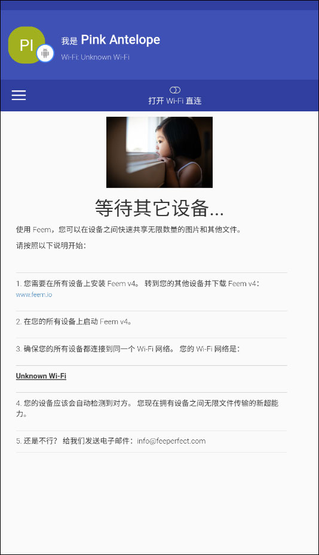

每周跨设备搬文件，我用 Feem 搭了一条不依赖云盘的本地传输链
每周从公司电脑搬设计稿回家继续改、给同事传临时文件，以前要微信+U盘+云盘轮着用。装上 Feem 后搭了一条纯本地的点对点传输链，连切换App都省了。
我每周都要做一件麻烦事
我是做设计的，每周至少有三次要把公司电脑上刚做好的图稿、视频素材打包带回家继续改。还有同事之间临时传个方案文档、压缩包这种小事，每天都在发生。
以前的流程说出来都是泪：微信传超过 100MB 就卡住，钉钉稍大一点的文件要等半天还容易被限流；U盘倒是稳，但我经常忘带；开云盘分享链接的话，还要先生成链接、发对方、对方再打开下载——来回好几个步骤。一个简单的"把这 2GB 图稿带回家"，以前要折腾十五分钟。
后来我从下载装上 Feem，把它插进了这条链里。现在下班前在公司电脑上点几下，手机震一下就收到了；到家后手机发笔记本，整个过程不打开任何云盘、不生成任何分享链接、不用插U盘。
旧流程为什么卡
先把旧流程拆解一下，你会发现它卡的地方不是单一一个工具不行，而是整条链的每一环都有各自的短板：
- 微信和钉钉的文件传输本质上还是走云端中转，大文件要先上传到服务器再下发，速度取决于两边网络，高峰期经常卡
- U盘是唯一不依赖网络的方案，但物理介质就是容易丢、容易忘、容量还有上限
- 云盘分享的好处是稳定，但"生成链接 → 复制 → 发出去 → 对方打开 → 等下载"这五步，每一步都有手动操作，而且分享链接还有过期、密码、权限这些额外设置
核心问题就一个：这条链上没有一个环节是真正点对点的。所有方案都是"你 → 服务器 → 他"，中间多一跳就多一层延迟和不确定性。
新流程：Feem 插进了哪一环
Feem 的官网定位很简单——局域网内的设备之间点对点传文件，不经过任何服务器。我把它插进了旧流程里原本最耗时的那一段：两台设备之间的文件搬运。
新的工作流是这样的：
场景一：公司电脑 → 我的手机 → 家
- 下班前，公司电脑和我的手机连同一个公司 Wi-Fi
- 电脑上打开 Feem，手机上也打开 Feem，两边自动发现彼此（UDP 45001 端口广播）
- 电脑端把要带走的文件拖进 Feem 的会话窗口，点发送
- 手机 Feem 收到，进度条走完就自动存好了
- 到家后，手机和笔记本连同一个 Wi-Fi，重复一遍——手机 Feem 发给笔记本 Feem
整个过程中 Feem 的聊天界面里每一条文件都是一个气泡，发完自动打勾，48 小时后自动清掉，不用我手动整理。
场景二：公司电脑 → 同事电脑（临时文件）
这个场景更简单——两台电脑在同一个办公区，连同一个 Wi-Fi，Feem 直接点对点传。以前我要发云盘链接的 500MB 压缩包，现在拖一下就完了。
实操里最容易断链的两个环节
上面的流程听起来很顺，但实际跑了两周，我发现有两个地方如果不提前处理，整条链就会卡住。这两个坑是样本里的文档帮我踩过的。
坑一：传输切 App 被系统杀掉
这是移动端最头疼的。安卓的 MIUI、EMUI、ColorOS 这些 ROM，后台 App 留几秒就可能直接杀掉进程。我有次在手机上用 Feem 收一个 4GB 的视频，中间切去微信回了条消息，回来就发现 Feem 的传输停了，而且因为进程被杀，断点信息也丢了——只能从头传。
解决办法是系统级的，在安卓设置里把 Feem 设为无限制后台：进入手机的"电池与性能"设置，把 Feem 加入白名单，允许它在后台运行时不受系统优化限制。iOS 类似，在"设置 → Feem"里打开"后台 App 刷新"。设好之后 Feem 在后台传输就不会被系统杀了。
如果还是怕，传输期间就别切 App——或者干脆用 Feem 自带的聊天功能说一声，不用切到微信。Feem 的聊天和传输在同一个界面，发完文件直接在聊天框里敲一句"图稿发你了"就行。

坑二：公司路由器隔离搜不到设备
有几次我和同事在同一个办公区、连同一个 Wi-Fi，但 Feem 互相搜不到。查了Feem文档才知道，有些企业级路由器开了"AP 隔离"或者"客户端隔离"——这个功能会让同一 Wi-Fi 下的设备互相看不到，是公司出于安全考虑开的。
这种时候就要用 Feem 的 Wi-Fi Direct 直连模式。操作很简单：在手机 Feem 的设置里点一下 Wi-Fi Direct 开关，Feem 会自动创建一个临时热点（比如 "Feem-Happy-Turtle-1234"），然后在电脑的 Wi-Fi 设置里手动连接这个热点。连上之后，两台设备就在这个临时网络里，Feem 就能正常发现彼此了。
Wi-Fi Direct 还有一个额外好处——速度比走路由器快一倍左右。文档里给的实测数据是：4GB 视频，走 Wi-Fi 5 路由器要 45 秒，用 Wi-Fi Direct 直连只要 20 秒。原理也很直白：走路由器是 Device A → Router → Device B，带宽被劈成两半；直连就是 A 直接到 B，没中间转发。
还有一个容易忽略的点：用 Feem 之前必须关掉所有设备上的 VPN。不管是系统代理还是 Clash、V2Ray 这种工具，VPN 会把 Feem 的 UDP 广播包导到 VPN 隧道里去，导致设备发现彻底失效。

效果和边界
跑了一个月，这套流程省了我两件事：少了U盘往返（再也没忘带过），少了云盘链接的五步手动操作。以前 15 分钟能搞定的事，现在打开 Feem 拖文件，进度条走完就完了——从手动步骤来说，从 7 步降到了 2 步。
但这套流程也有边界，不是万能的：
Feem 只能在同一个局域网内用，不能跨互联网传文件。如果我在公司要把文件发给家里的人，那还是得用云盘。还有公网环境——酒店、星巴克这些地方的 Wi-Fi 几乎都开了客户端隔离，这时候 Wi-Fi Direct 是唯一的出路，但要记得传完关掉，不然热点一直开着费电还可能被陌生人蹭。
另外 Feem 的传输端口是固定的 TCP 45001 和 UDP 45001。如果 Windows Defender 或者第三方安全软件拦截了这两个端口，Feem 就会出现搜不到设备或者传一半断的情况。安装后第一次启动时如果 Windows 弹了防火墙提示，那个"允许"按钮一定要点。没点的话手动去防火墙高级设置里，把这两个端口的入站和出站规则都加上。
资料说明
这套 Feem 的配置要点和常见故障排查，我整理后同步到了三个仓库里——GitHub上有完整的官方版资料，Gitee和GitCode也各自备份了一份，方便国内网络环境下随时查阅。